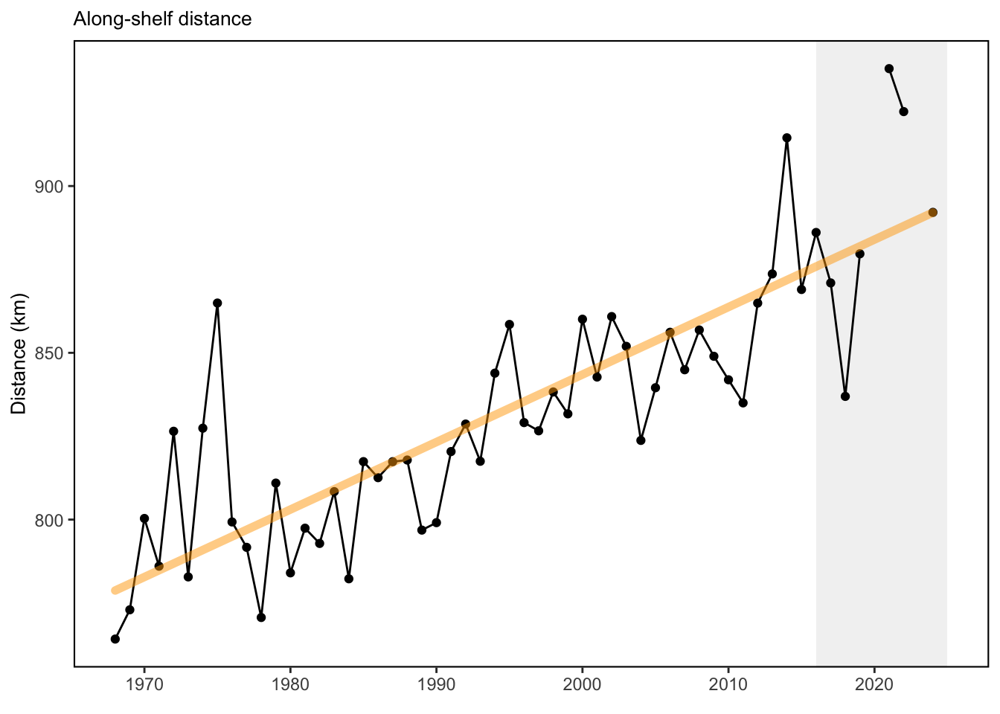
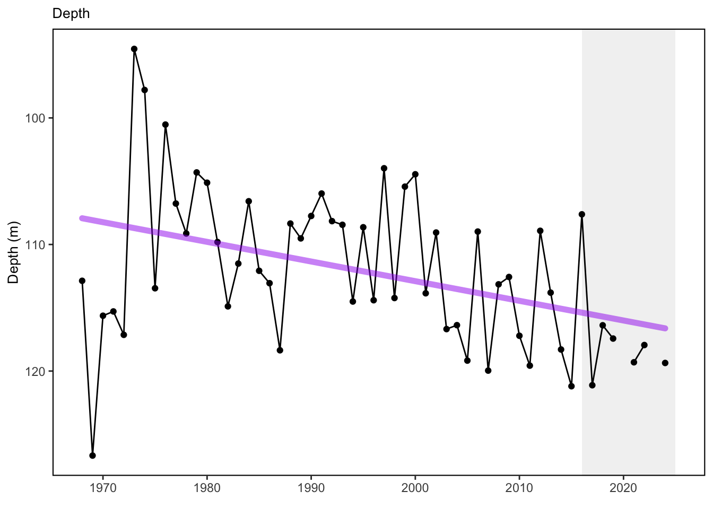

SMART Indicator Report: Species Distribution Indicators
1 Descriptive Section
1.2 Indicator name
Species Distribution Indicators
Includes variable(s): along-shelf distance, depth, distance to coast
1.4 Indicator visualization
Tunas and other highly migratory species (no dataset) 20 of 22 modeled tuna stocks had significant poleward shifts in their gravity center and/or one of their distribution limits. In the North Atlantic, albacore and bluefin tuna had modeled habitat shift northward [38]. Species distribution shifts have been noted for several highly migratory species, including sharks, billfish and tunas between 2002 and 2019 (Fig. 1) [39]. NEFSC bottom trawl captured fish (ecodata::species_dist) The center of distribution for a suite of 48 commercially or ecologically important fish species along the entire Northeast Shelf continues to show movement towards the northeast and generally into deeper water.

## [1] "This is a shelfwide indicator only used in the MidAtlantic report"
## [1] "This is a shelfwide indicator only used in the MidAtlantic report"2 SMART Attribute Section
2.1 Indicator documentation
2.1.1 Are indicators available for others to use (data downloadable)?
Yes
2.1.1.1 Where can indicators be found?
Data: https://noaa-edab.github.io/ecodata/index.html
Description: https://noaa-edab.github.io/catalog/species_dist.html
Technical documentation: https://noaa-edab.github.io/tech-doc/species_dist.html
2.1.1.2 How often are they updated? Are future updates likely?
[need sequential look at datasets for update frequency. Future requires judgement]
2.1.1.3 Who is the contact?
Kevin Friedland, kevin.friedland@noaa.gov
2.1.2 Gather indicator statistics
2.1.2.2 Length of time series, start and end date, periodicity
General overview: Annual
Indicator specifics:
Indicator | EPU | StartYear | EndYear | NumYears | MissingYears |
|---|---|---|---|---|---|
along-shelf distance | All | 1968 | 2024 | 55 | 2 |
depth | All | 1968 | 2024 | 55 | 2 |
distance to coast | All | 1968 | 2024 | 55 | 2 |
2.1.2.3 Spatial location, scale and extent
General overview: Shelfwide
Indicator specifics:
Indicator | EPU |
|---|---|
along-shelf distance | All |
depth | All |
distance to coast | All |
2.1.3 Are methods clearly documented to obtain source data and calculate indicators?
Yes
2.1.4 Are indicator underlying source data linked or easy to find?
Source data are available upon request (read more here). Derived data may be downloaded here.
2.1.4.1 Where are source data stored?
Data for these indicators were derived from fishery-independent bottom trawl survey data collected by the Northeast Fisheries Science Center (NEFSC).
2.1.4.2 How/by whom are source data updated? Are future updates likely?
Brandon Beltz brandon.beltz@noaa.gov
[likelihood of source data updates requires judgement, enter by hand]
2.2 Indicator analysis/testing or history of use
2.2.1 What decision or advice processes are the indicators currently used in?
Distribution shifts for a suite of 48 commercially or ecologically important fish species were evaluated using center of gravity metrics based on NEFSC bottom trawl survey data. Along-shelf distance is a metric for quantifying the distribution of a species through time along the axis of the US Northeast Continental Shelf, which extends northeastward from the Outer Banks of North Carolina. Once mean distance is found, depth of occurrence and distance to coastline can be calculated for each species’ positional center. Published distribution metrics for highly migratory species are also available for comparison. There is a significant body of work addressing potential distribution changes of tuna and other HMS due to climate change. [38] analyzed historical data from 1958 to 2004. This paper considers global distribution changes of tunas and “tuna habitat” (derived from modeling tuna relative abundance x PISCES model data), including Atlantic bluefin tuna and our BAYS tunas.
2.2.2 What implications of the indicators are currently listed?
Temperature change is a major driver of changing fish distributions [40]. Future projection modeling suggested potential loss in northwestern Atlantic / US EEZ abundance of bluefin tuna and bigeye tuna [38,41]. Distribution shifts caused by changes in thermal habitat and ocean circulation are likely to continue as long as long-term trends persist. Episodic and short-term events (see observation highlights) may increase variability in the trends, however species distributions are unlikely to reverse to historical ranges in the short term. Increased mechanistic understanding of distribution drivers is needed to better understand future distribution shifts: species with high mobility or short lifespans react differently from immobile or long lived species. Long-term oceanographic projections forecast a temporary pause in warming over the next decade due to internal variability in circulation and a southward shift of the Gulf Stream [42]. Near-term forecasts [43] are being evaluated to determine how well they are able to predict episodic and anomalous events that are outside of the long-term patterns.
2.2.3 Do target, limit, or threshold values already exist for the indicator?
Target, limit, or threshold terms detected
2.2.4 Have the indicators been tested to ensure they respond proportionally to a change in the underlying process?
No
3 SMART rating
Category | Indicator | Element | Attribute | Rating | ElementRating | OverallRating |
|---|---|---|---|---|---|---|
Fish | Species Distribution Indicators | Specific | Described | 1 | 0.6666667 | 0.7333333 |
Fish | Species Distribution Indicators | Specific | Units | 1 | 0.6666667 | 0.7333333 |
Fish | Species Distribution Indicators | Specific | Spatial | 1 | 0.6666667 | 0.7333333 |
Fish | Species Distribution Indicators | Specific | Uncertainty | 0 | 0.6666667 | 0.7333333 |
Fish | Species Distribution Indicators | Specific | Methods | 1 | 0.6666667 | 0.7333333 |
Fish | Species Distribution Indicators | Specific | Code | 0 | 0.6666667 | 0.7333333 |
Fish | Species Distribution Indicators | Measurable | Available | 1 | 1.0000000 | 0.7333333 |
Fish | Species Distribution Indicators | Measurable | Online | 1 | 1.0000000 | 0.7333333 |
Fish | Species Distribution Indicators | Measurable | Contact | 1 | 1.0000000 | 0.7333333 |
Fish | Species Distribution Indicators | Measurable | SourceDat | 1 | 1.0000000 | 0.7333333 |
Fish | Species Distribution Indicators | Measurable | SourceAvail | 1 | 1.0000000 | 0.7333333 |
Fish | Species Distribution Indicators | Measurable | SourceContact | 1 | 1.0000000 | 0.7333333 |
Fish | Species Distribution Indicators | Achievable | Tested | 0 | 0.0000000 | 0.7333333 |
Fish | Species Distribution Indicators | Achievable | Sensitivity | 0 | 0.0000000 | 0.7333333 |
Fish | Species Distribution Indicators | Achievable | TimeLag | 0 | 0.0000000 | 0.7333333 |
Fish | Species Distribution Indicators | Relevant | Advice | 1 | 1.0000000 | 0.7333333 |
Fish | Species Distribution Indicators | Relevant | Implications | 1 | 1.0000000 | 0.7333333 |
Fish | Species Distribution Indicators | Relevant | TargThresh | 1 | 1.0000000 | 0.7333333 |
Fish | Species Distribution Indicators | Timebound | Frequency | 1 | 1.0000000 | 0.7333333 |
Fish | Species Distribution Indicators | Timebound | Updated | 1 | 1.0000000 | 0.7333333 |
3.1 Comments
[Fill below by hand once above data complete]
3.1.1 Additional potential links to management in addition to uses listed above
3.1.2 What additional work would be needed for the Council to use the indicator?
3.1.3 What issues are caused if there is a gap or delay in data underlying the indicator